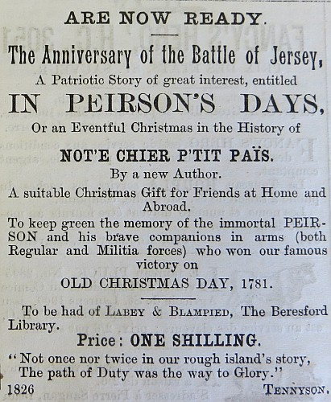

|
pour nos Ammins siez nous et hors païs.
Le livre es écrit en Ang'iais mais i'y a des conversations en buon vier Jerriais. Acatez vite devant que tout s'rait vendu. Nous les vend siez Messieux Labey et Blampied, Du Parcq, S.P.C.K (Waterloo Street), Rowe, Payn, Bigwood et ès boutiques ès qu'min d'fer.
|
Nouvelle Chronique de Jersey 24/12/1902


Viyiz étout: